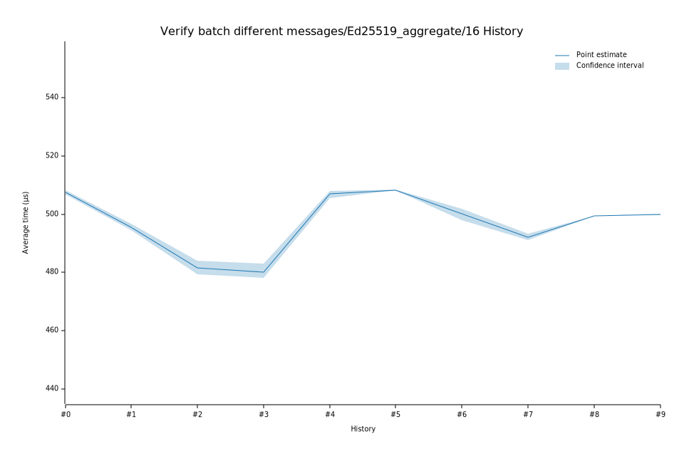

# 72023-06-01T08:13:36Z
|
Lower Bound |
Estimate |
Upper Bound |
| Value: |
491.00µs |
492.12µs |
493.38µs |
| Change in Value: |
-1.2975% |
-0.5813% |
+0.1968% |
Change within noise threshold.
# 62023-04-27T10:00:39Z
|
Lower Bound |
Estimate |
Upper Bound |
| Value: |
498.01µs |
500.06µs |
501.84µs |
| Change in Value: |
-3.2348% |
-2.5057% |
-1.8291% |
No change in performance detected.
# 52023-02-13T20:44:17Z
|
Lower Bound |
Estimate |
Upper Bound |
| Value: |
508.25µs |
508.34µs |
508.44µs |
| Change in Value: |
+0.1678% |
+0.4052% |
+0.6536% |
No change in performance detected.
# 42023-02-09T12:51:18Z
|
Lower Bound |
Estimate |
Upper Bound |
| Value: |
505.65µs |
506.95µs |
508.10µs |
| Change in Value: |
+4.7776% |
+5.4554% |
+6.0545% |
No change in performance detected.
# 32023-02-08T18:59:16Z
|
Lower Bound |
Estimate |
Upper Bound |
| Value: |
478.13µs |
480.14µs |
483.02µs |
| Change in Value: |
-0.6811% |
-0.0474% |
+0.5680% |
Change within noise threshold.
# 22022-12-05T08:47:41Z
|
Lower Bound |
Estimate |
Upper Bound |
| Value: |
479.35µs |
481.54µs |
483.99µs |
| Change in Value: |
-3.4677% |
-3.0732% |
-2.6381% |
No change in performance detected.
# 12022-11-14T12:01:03Z
|
Lower Bound |
Estimate |
Upper Bound |
| Value: |
494.47µs |
495.61µs |
496.77µs |
| Change in Value: |
-2.6686% |
-2.3992% |
-2.1515% |
No change in performance detected.
# 02022-11-04T13:39:22Z
|
Lower Bound |
Estimate |
Upper Bound |
| Value: |
506.66µs |
507.51µs |
508.32µs |